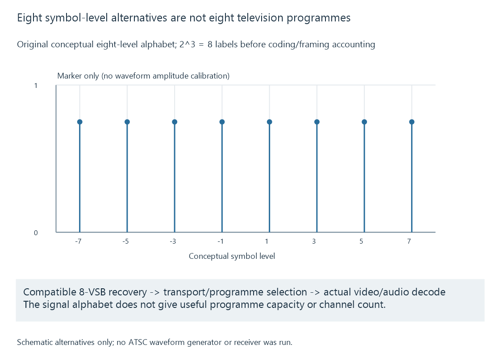

ATSC 1.0 broadcast television
ATSC 1.0 uses the A/53 television system, including its terrestrial 8-VSB transmission and MPEG transport/service relationships, with PSIP providing relevant channel information.
ATSC 1.0 is associated with the A/53 digital television system. Its terrestrial transmission uses 8-VSB, while later processing recovers and selects programme services in the transport.
The RF modulation, transport tables and encoded picture format are different parts of the route.
Eight signal levels do not mean eight programmes
The “8” in 8-VSB concerns eight symbol-level alternatives in its modulation arrangement. Eight alternatives can label three bits because:
2³ = 8
That arithmetic does not give the useful programme bitrate. Framing, synchronization, coding and error protection must also be included in a real transmission calculation.

It is a conceptual alphabet, not an ATSC waveform generator or a reconstruction of the complete coded signal.
A compatible frontend recovers the broadcast data. The television application then needs the intended service and its actual media components.
A transport can carry several programme services
An MPEG transport can contain several programmes, with tables associating programme numbers with component streams.
Broadcast multiplexes explains that sharing. The PAT and PMT relationships are developed in MPEG-TS programme tables.
One tuned carrier therefore need not correspond to one item in the viewer’s channel list.
ATSC PSIP supplies additional information, including the relationship between virtual channel labels and transported programmes. A major/minor label such as 7.1 is not itself an RF frequency.
Virtual channel numbers develops that identity mapping.
A/53 separates transport from video and audio
A/53 includes several parts rather than one undifferentiated “ATSC format.” Its video and audio parts have their own scope.
MPEG-2 video and AC-3 are familiar ATSC 1.0 representations, but a universal “ATSC 1.0 can only carry MPEG-2 video” claim would miss later transport work. ATSC’s current catalogue includes the Part 3:2023-02 rollup incorporating AVC signal transport.
That does not mean every station uses AVC or every legacy receiver decodes it. It means the component representation must be read from the actual service and the supported receiving/playback profile.
Emby receives the recovered service
A supported tuner/backend exposes the selected encoded programme to Emby. Client compatibility and any needed preparation follow from its actual video/audio streams.
ATSC reception alone does not guarantee that the current client can consume every recovered representation unchanged.
ATSC 3.0 is a different system architecture and waveform, so it should not be described as a codec option that an ATSC 1.0-only frontend gains merely by updating its media player.
See Also
- ATSC 3.0 broadcast television
- Virtual channel numbers
- MPEG Transport Stream: TS and M2TS
- Over-the-air television